Dodgeline.
A one-thumb arcade game for iPhone. Your block rides one wall of a falling corridor; tap to dash to the other wall and dodge what's coming. I took it from concept to a play-ready build in two days: game design, UX/UI, visuals, sound and playtesting.
Built with Claude Code as my pair-programmer. I made every design decision. All graphics, music, sounds and the icon are generated in code.
One-tap games live or die on feel. The mechanic fits in one sentence, so readability, fairness and pacing have to carry everything. And the genre is crowded and full of ads.
A fast, fair arcade game: close calls, Overdrive, blocks that land on the beat, an endless mode and 50 hand-made levels. No ads, no tracking.
A play-ready iPhone build in two days. An autopilot clears all 50 levels with zero unfair gaps. App Store submission is next.
From one tap to a finished game
-
01
One thumb, two walls
Tap to dash to the other wall. Dash at the last moment for a close call, which raises your multiplier up to ×5. Chain enough and you hit Overdrive: a few seconds to smash through everything.
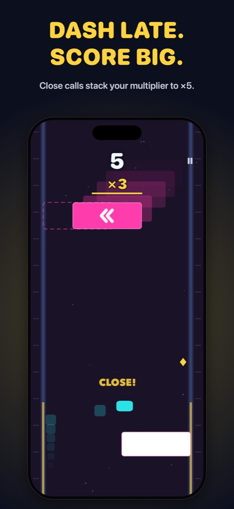
-
02
Research before polish
A 33-page competitor analysis of 18 games, plus research on pacing, mystery-box UX and level design. Two findings shaped everything: 39% of angry reviews were about ads, and the best-loved games are fair and built around music.
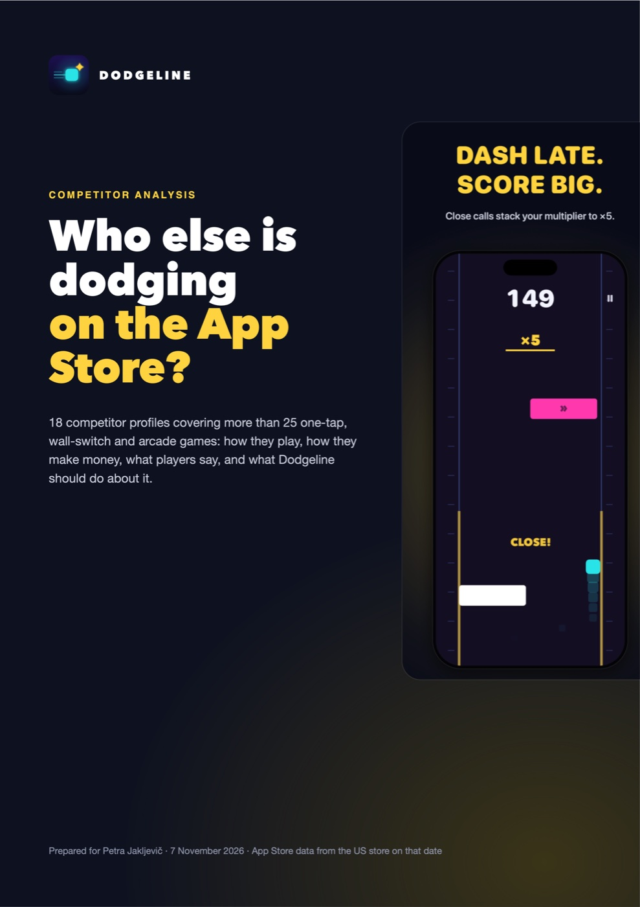
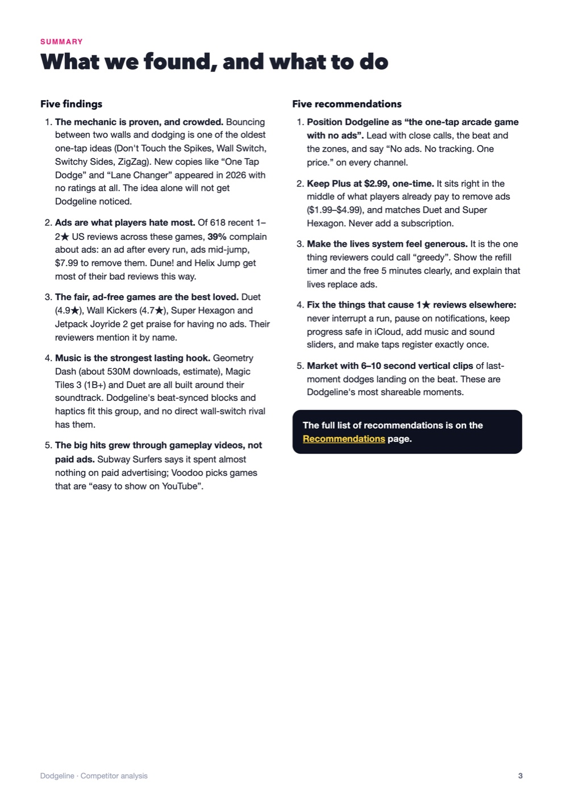
-
03
Readable at a glance
I tried 2.5D, glass and neon-outline blocks. They looked richer in a still frame but were harder to read in motion, so the final blocks are flat and solid, with an edge that glows hotter each zone. Lasers took four rounds: the final one starts as a spark in the centre and stretches to one wall.
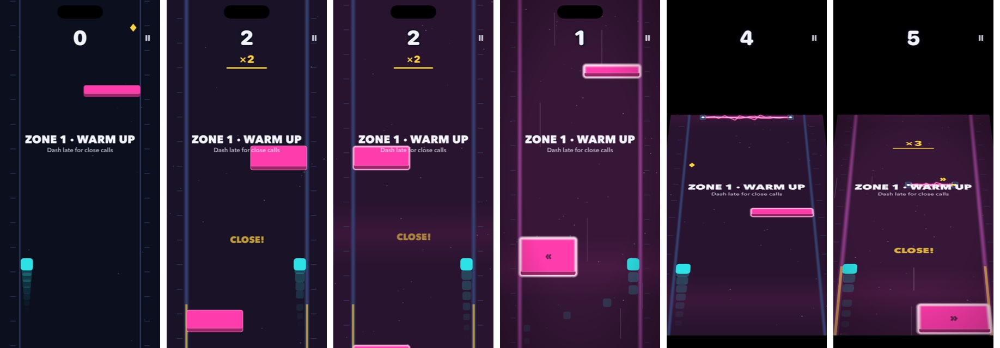
-
04
Fairness is a rule, not a feeling
Every row leaves a guaranteed gap with time to react. A new player's first runs ramp up more slowly. Pacing follows time played, not score, with a short breather after each new zone. An autopilot plays all 50 levels and flags anything unfair.
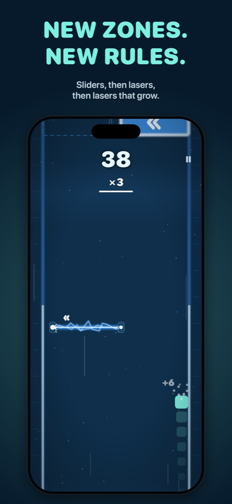
-
05
Make it feel physical
A playtester asked for blocks on the beat. Now the music is generated live, speeds up with the game, and every block reaches you on the beat while the phone taps along. Overdrive got the opposite treatment: I pushed it as far as it would go, then toned it down when it hid your own block.
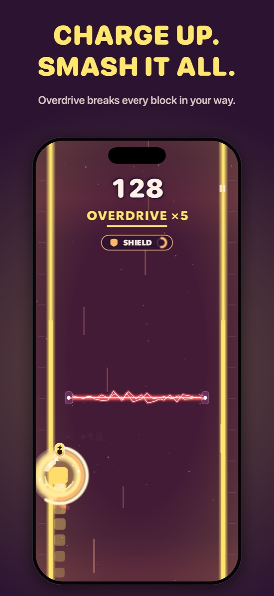
-
06
Levels that are designed, not generated
The first levels only got longer. I rebuilt them from hand-made patterns, and every world follows the same arc: introduce an idea, practise it, twist it, then a finale. Each level has its own goals and its own song.
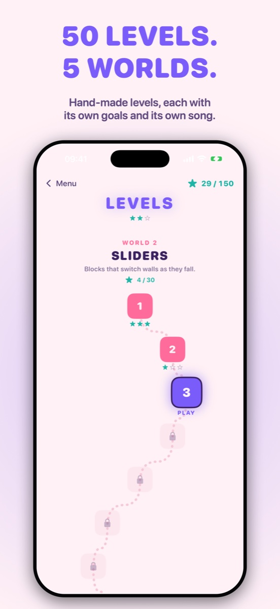
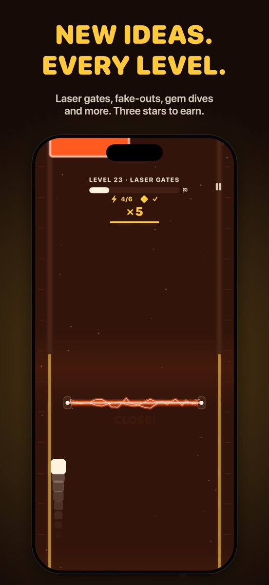
-
07
Rewards people understand
A tester picked up a mystery box and thought it was a shield. After researching how endless runners handle this, I split boxes into two clear promises: gold for a helpful effect, purple for a wild one worth double points. A reveal badge and a countdown ring show what you got and how long it lasts.
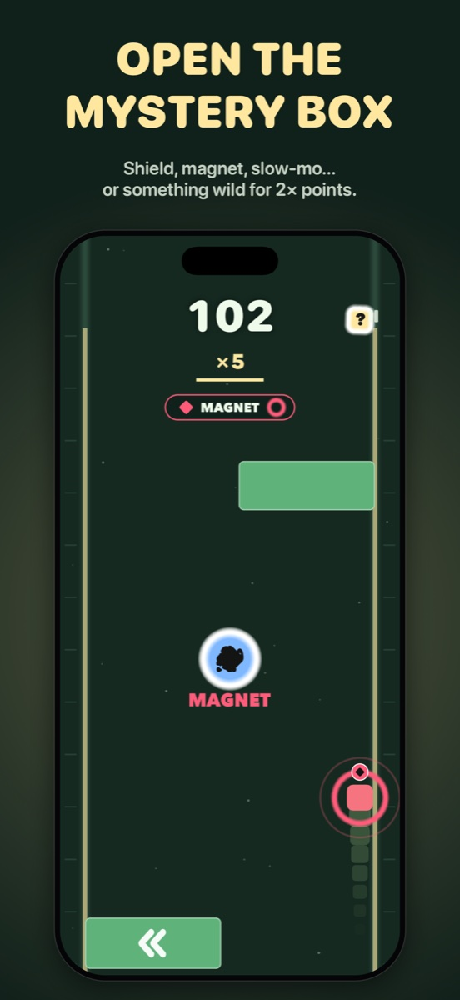
-
08
Fair to the wallet too
No ads and no tracking. Five lives that refill for free, five free unlimited minutes a day when you run out, and one optional purchase for unlimited play, more worlds and extra themes.
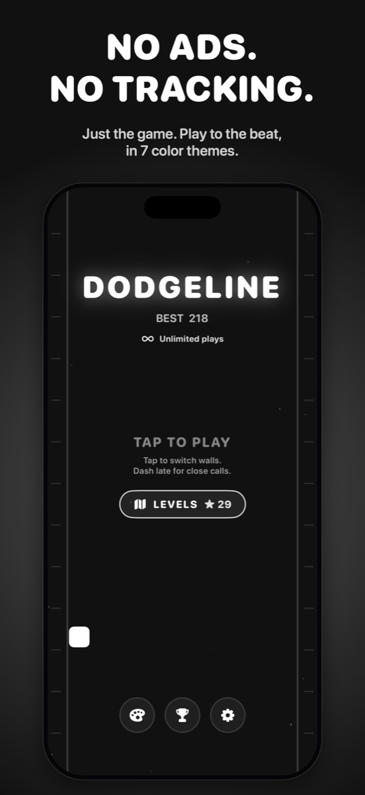
-
09
Cut what doesn't earn its place
I built a 3D tilted view, iterated on it, and removed it: it felt slower and added no new decisions. The difficulty picker went too, because one fair leaderboard is part of the appeal.
-
10
A name and a face
The working title, Flipline, clashed with an existing developer, so it became Dodgeline, which says what you do. Ten icon concepts, checked on a real home screen. Spark Dash won.
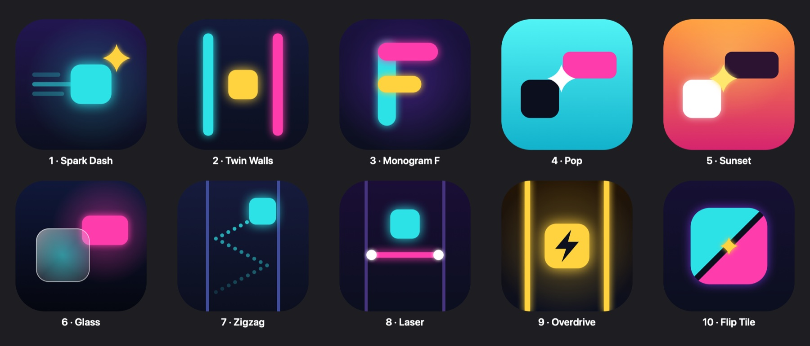
What I learnedFeel lives in small numbers: a dash of 0.18 seconds felt floaty, and 0.1 felt right. And a striking idea isn't worth keeping if it makes the core loop worse. Every round of playtest feedback became a concrete change.
Other projects


Let's bring your
vision to life.
I'm here to help you create something exceptional — together.